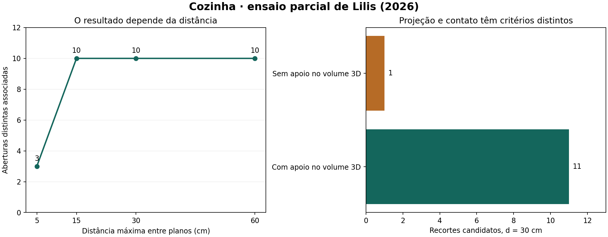

O ensaio adaptou operadores do artigo para projetar aberturas nas faces do ambiente e calcular o que sobra após os recortes. A associação à parede é herdada do código híbrido anterior. A contribuição observada é geométrica e comparativa; não foi demonstrado ganho de acurácia arquitetônica.
20 de 20 controles aprovados · 184 aberturas examinadas no IFC · 26 próximas avaliadas · 10 aberturas associadas · 12 recortes candidatos.

As dez aberturas distintas do procedimento anterior foram preservadas. Foram obtidos 12 recortes locais: 11 têm apoio no volume 3D no limiar de 10⁻⁷ m²; um recorte adicional de 0,062 m² aparece por projeção e não tem esse apoio. Isso não refuta Lilis: o artigo admite projeção entre planos separados. O híbrido mantém esse recorte como candidato e não certifica uma nova relação.
5 cm associam três aberturas; 15, 30 e 60 cm associam dez. Aumentar a distância também aumenta os recortes brutos. Estabilidade da contagem não prova que as geometrias sejam idênticas ou arquitetonicamente corretas. A variante por componente é uma extensão separada; não substitui silenciosamente a escolha global maxA.
| d (m) | Variante | Recortes brutos | Aberturas associadas |
|---|---|---|---|
| 0.050000 | maxA_global_artigo | 15 | 3 |
| 0.050000 | maxA_por_componente_extensao | 23 | 3 |
| 0.150000 | maxA_global_artigo | 27 | 10 |
| 0.150000 | maxA_por_componente_extensao | 38 | 10 |
| 0.300000 | maxA_global_artigo | 33 | 10 |
| 0.300000 | maxA_por_componente_extensao | 45 | 10 |
| 0.600000 | maxA_global_artigo | 47 | 10 |
| 0.600000 | maxA_por_componente_extensao | 59 | 10 |
| Interface | Abertura | Projeção (m²) | Common 3D (m²) | Sem apoio (m²) |
|---|---|---|---|---|
| I_W12_F000_R17_P0 | 3jgqqodbWPKg146xEcFt2w | 0.062000 | 0.000000 | 0.062000 |
Preservadas todas as 2559 triplas anteriores. Saída com 3244 triplas e 12 recortes recuperados por SPARQL. Candidatos de Lilis são identificados separadamente das relações anteriores. Nenhuma nova adjacência BOT é certificada. O IFC original mantém seu SHA-256.
RDF · Consulta · Comparação geométrica · Registro completo
LILIS, G. N. et al. Automated generation of building energy model geometry from BIM-derived space and opening volumes. Automation in Construction, 185, 106840, 2026. DOI. Artigo com licença CC BY. Código aqui reimplementado a partir das equações e pseudocódigos; não é o programa C++ dos autores.
KIAVARZ et al. (2023), DOI; FICHTER et al. (2021), DOI; KRIJNEN et al. (2020), DOI; ZHANG et al. (2018), DOI. São reutilizados os módulos parciais anteriores; equivalência aos programas completos não é afirmada.